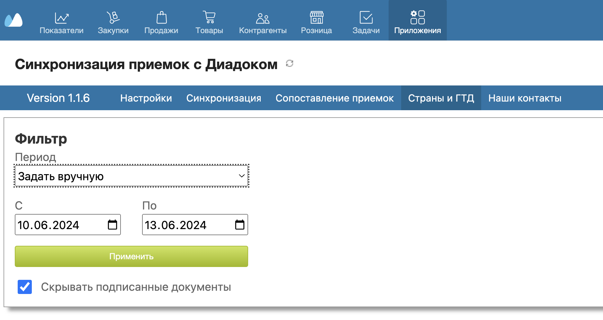
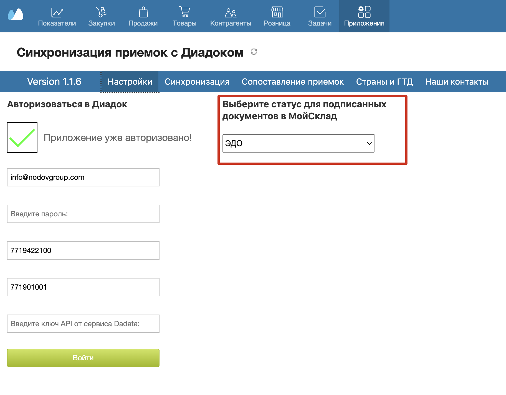
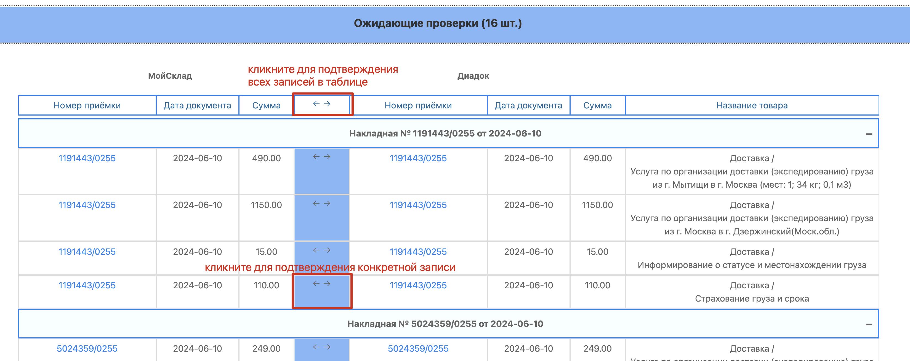
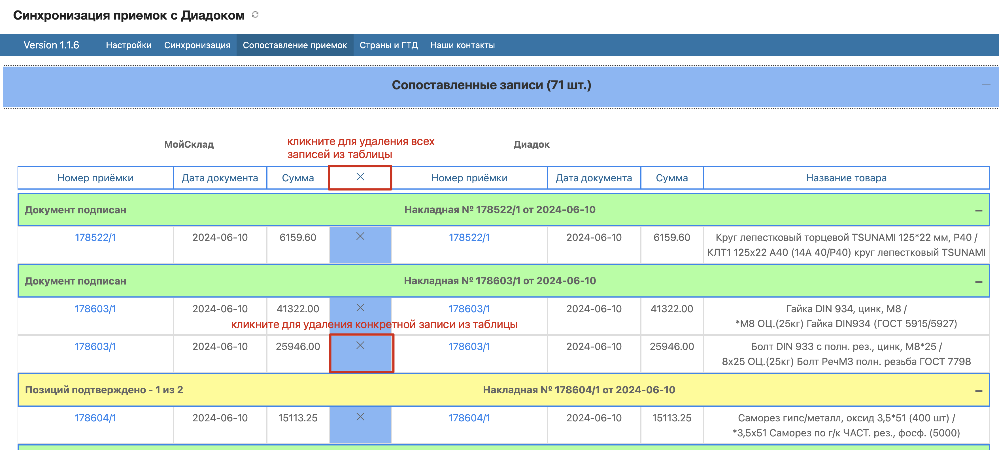
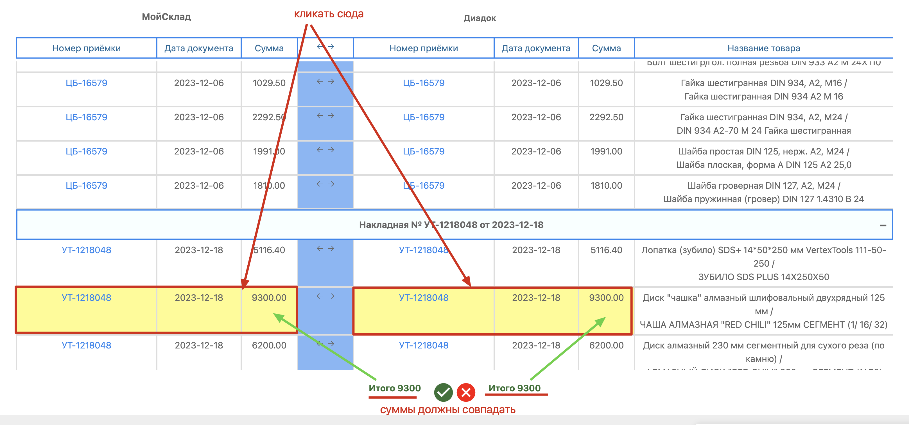

Возможности приложения
Приложение предназначено для синхронизации приемок из Мойсклад с приемками из Диадок
Приложение анализирует и сопоставляет приемки по трем параметрам
- По номеру приемки - номер приемки в Диадок должен совпадать с номером приемки в Мойсклад
- По суммам указанным в приемках - допускается расхождение в 1 копейку
- По датам последнего изменения документов (приемок) - допускается расхождение в 1 день
Так же присутствует возможность сопоставления приемок в ручном режиме
Инструкция
Шаг 1 Авторизация в Диадок
На вкладке Настройки следует авторизоваться в Диадок
Для этого вам потребуются следующие данные
- Логин от Диадок
- Пароль от Диадок
- ИНН организации
- КПП организации (данное поле необязательно для заполнения)
Используется в случаях когда у вас две организации
с одинаковым ИНН - например ООО и ИП

Шаг 2 Синхронизация данных
На вкладке Синхронизация следует выполнить синхронизацию приемок
Cинхронизация данных из Мойсклад
Для Мойсклад можно выполнить
- Полную синхронизацию - будут загружены все документы(Приемки) созданные с момента создания аккаунта в Мойсклад
(Для текущего пользователя (заказчика) Полная синхронизация работает с документами от октября 2023 и более ранними) - Частичную синхронизацию - будут загружены все документы(Приемки) созданные с момента последней частичной синхронизации
При первом запуске Частичной синхронизации будут актуализированы данные только за текущий день.
Поэтому после выполнения Полной синхронизации рекомендуется в этот же день запустить Частичную синхронизацию - Синхронизацию стран - будет загружен и актуализирован список стран хранящийся у пользователя в аккаунте Мойсклад
Cинхронизация данных из Диадок
Для Диадок можно выполнить
- Полную синхронизацию - будут загружены все документы (Приемки) с последних 45 страниц списка документов в Диадок
- Частичную синхронизацию - будут загружены и актуализированы все документы (Приемки) созданные и изменившие свой статус за последний день или за последние 3 дня
Шаг 3 Сопоставление приемок
На вкладке Сопоставление приемок отображаются сопоставленные документы (Приемки).
Фильтрация данных
Данные на странице отображаются за определенный период времени
Период можно выбрать из уже предустановленных или задать вручную выбрав соответсвующий пункт в выпадающем списке
Форма с фильтром "Реактивная" - изменения происходят сразу после выбора нужного значения из списка
Кнопка Применить доступна только в режиме "Задать вручную" После ввода значений в поля с датой нажмите на кнопку Применить и данные обновятся.
Так же имеется возможность исключить из выборки подписанные документы.
Подписанными документами считаются такие документы у которых статус соответствует статусу выбранному на вкладке Настройки
Статусы документов обновляются в процессе Синхронизации (полной или частичной)
Отображение данных
Вся информация разделена на 5 таблиц
- Сопоставленные записи - тут отображаются сопоставленные документы (Приемки) проверенные и подтвержденные пользователем
- Ожидающие проверки - тут отображаются сопоставленные документы (Приемки) совпадающие по дате изменения и сумме, требующие проверки и подтверждения пользователя
- Разница 1 коп - тут отображаются сопоставленные документы (Приемки) совпадающие по дате изменения, но отличающиеся по сумме в 1 копейку, требующие проверки и подтверждения пользователя
- Разница 1 день - тут отображаются сопоставленные документы (Приемки) совпадающие по сумме, но отличающиеся по дате изменения с разницей в 1 день, требующие проверки и подтверждения пользователя
- Оставшиеся записи - тут отображаются оставшиеся документы (Приемки) не попавшие ни в одну из выше перечисленных таблиц
Работа с таблицей
В таблице отображаются следующие данные:
- Номер приемки - можно открыть соответствующий документ в отдельной вкладке кликнув по его номеру в таблице
- Дата документа
- Сумма
- Названия товаров
- Подзаголовок в таблице - группирует все позиции относящиеся к одной накладной.
При клике по подзаголовку можно скрывать/отображать все позиции, которые относятся к данной накладной.
Для подтверждения сопоставления кликните по кнопке со стрелочками <--> в нужной строке таблицы
Чтобы подтвердить все записи в таблице кликните по кнопке <--> в заголовке таблицы
При подтверждении сопоставления записи переносятся в таблицу Сопоставленные записи
Для удаления сопоставления из подтвержденных записей в таблице Сопоставленные записи кликните по кнопке X в нужной строке таблицы
Чтобы удалить все записи в таблице Сопоставленные записи кликните по кнопке X в заголовке таблицы
При удалении сопоставления запись переносятся в ту таблицу из которой она были добавлена
Для ручного сопоставления кликните по записи в левой и правой части таблицы
Записи можно будет сопоставить только в том случая если сумма будет одинаковая
Чтобы отменить выделение повторно кликните по записи
Для подписания документа кликните по надписи Изменить статус на ... в подзаголовке в таблицы Сопоставленные записи
Статус накладной указанной в подзаголовке таблицы изменится на статус выбранный на вкладке Настройки
Изменять статус можно только в таблице Сопоставленные записи и только в том случае если все позиции в накладной подтверждены (находятся в данной таблице)
Зеленый цвет подзаголовка сигнализирует что все позиции в данной накладной подтверждены, а желтый, что остались не подтвержденные позиции
Шаг 4 Страны и ГТД
На вкладке Страны и ГТД можно автоматически переносить значения полей Страна и ГТД из документов Диадок в документы Мойсклад
Для переноса значения в соответствующей таблице нажмите кнопку <-
Перенос возможен только в том случае если поле со стороны Диадок заполнено, а со стороны Мойскалд нет.
В случае если поля заполнены разными значениями автоматический перенос не возможен